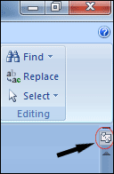
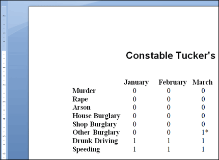
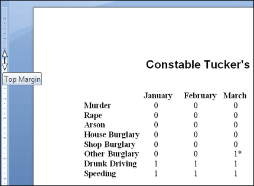
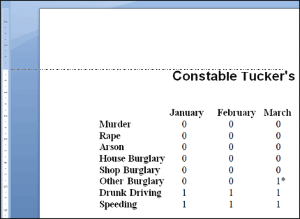
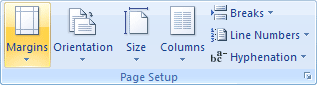
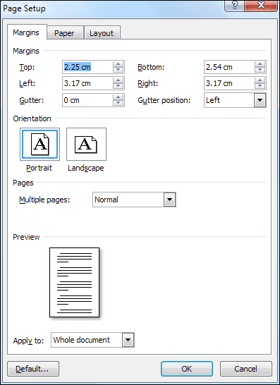
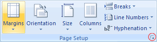
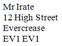

Free
computer Tutorials
|
Free
computer Tutorials
|
|
 home home |
|
|||||
Microsoft Word 2007 to 2010
Setting up Page Margins If you look at the ruler bar on the left of your screen, you'll see
blue (or grey) areas at the top and bottom of the left ruler, and a
white area in the middle. The blue areas are your top and bottom margins.
You can't move your cursor above the top margins, or below the bottom
one. Quite often, you'll want to change the amount of space used for
the margins. If you can't see a ruler on the left hand side, either select it from the Show/Hide panel on the View ribbon at the top of Word. Or click the ruler icon near the top right:  We'll adjust the Top margin for our report. The ruler bar on the left of the screen currently looks like this:  As you can see, there's a blue area to the left, and underneath a white area (this is grey and white in Word 2010). If you trace your finger from the bottom of the blue area across and to "Constable Tucker's Crime" you'll find they match up exactly. This is the top of our page. You can't move your cursor above the white area and into the blue area. But you can change the size of the blue area, and therefore your top margin. There are a couple of ways you can change your margins in Microsoft Word. We'll start with the tricky way!

 Notice the thin dashed line running across the page.
This is your current top margin
Notice how your top margin jumps down when you let go of your mouse button. You'll have a bigger gap at the top, and therefore more space. OK, that was the tricky way to adjust a top margin. Let's look at another way to change your page margins in Microsoft Word.
Changing Margins via the Page Layout tabAnother way to change your page margins is via the Page Setup dialogue box. Try the following:
 There is already a Margins option. Click this to see some pre-set margins. You can select one of these, if they are what you need. But click the Custom Margins option at the bottom to see the following dialogue box:  Another way to display the same dialogue box is to click the small arrow in the bottom right of the Page Setup panel:  But as you can see from the Page Setup dialogue box, you can set the Top, Bottom, Left, and Right margins from here. Try the following:
Change all the margins of your report so that they are the following Left 3 cm (1.18 inches) And that's all there is to it! In the next section, we'll look at some Cut, Copy and Paste techniques. Before we leave this section, one extra piece about Tabs. Remember how you set out the address for Review number one? You used right alignment. So your address looked like this: Mr Irate If you wanted the left side of the address in a straight line, you could use tabs.
The result is this style of address: 
In the next part, you'll learn different techniques for cut, copy and
paste. <--Back to the Word Contents Page View all our Home Study Computer Courses
|
||||||
|